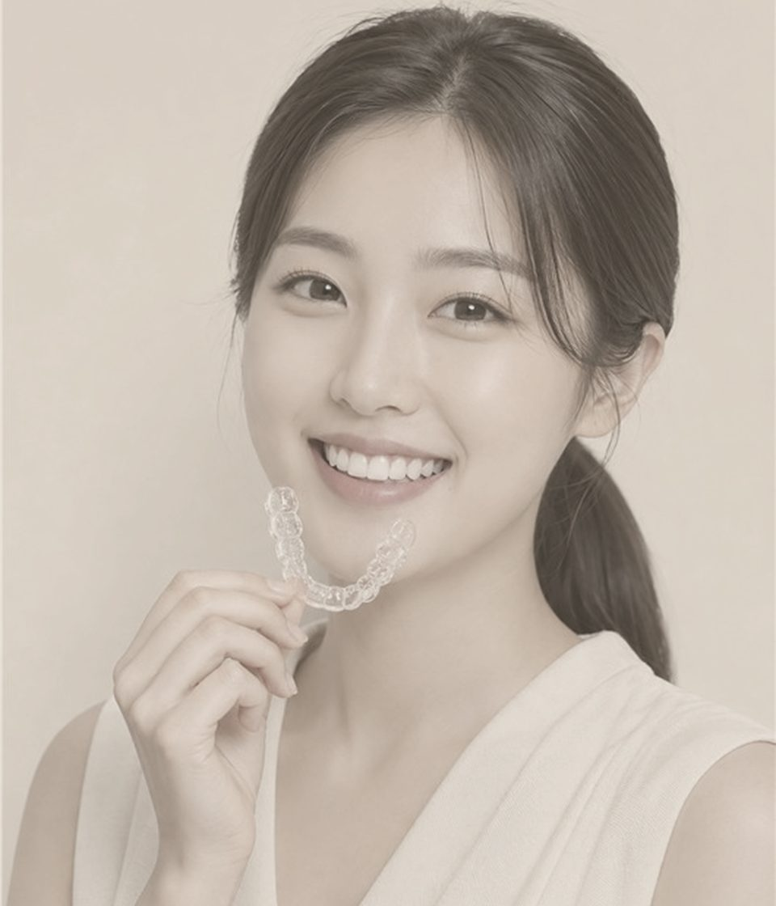
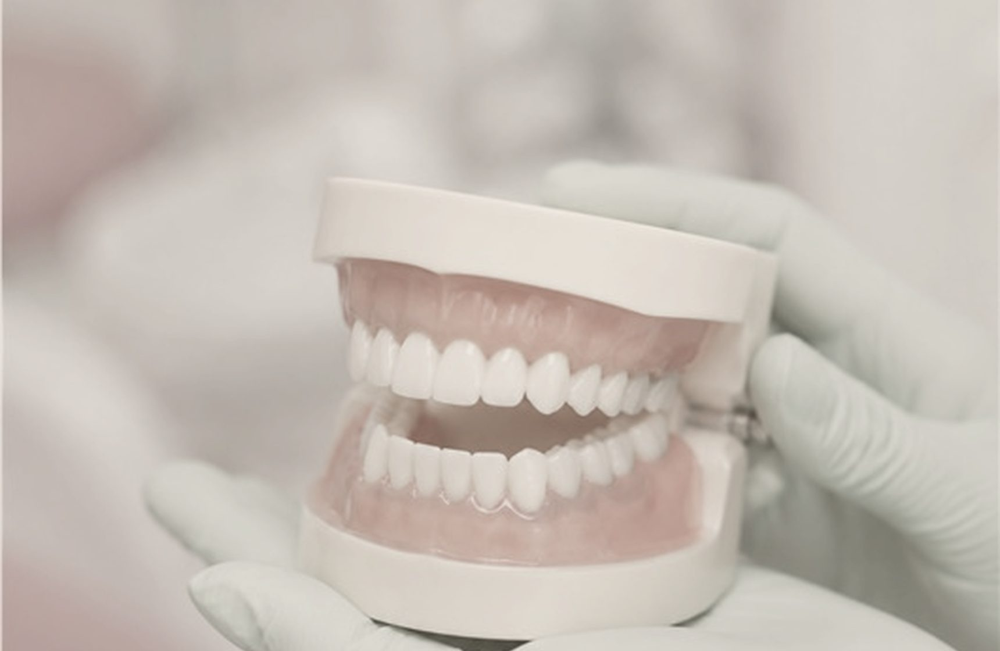
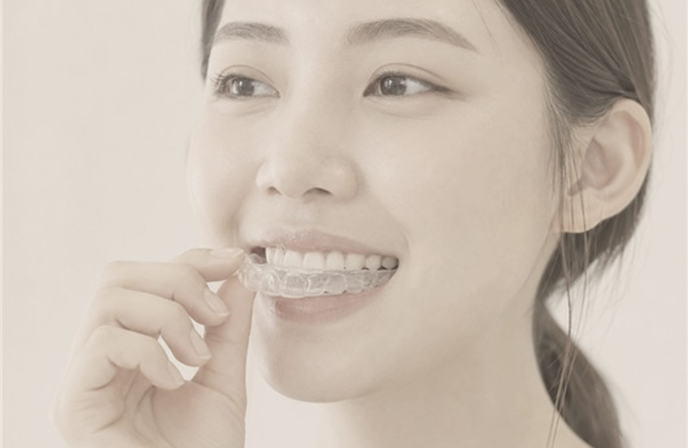
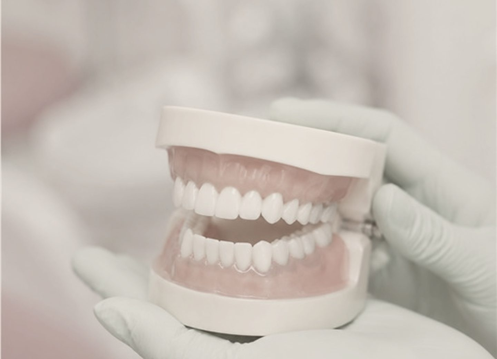
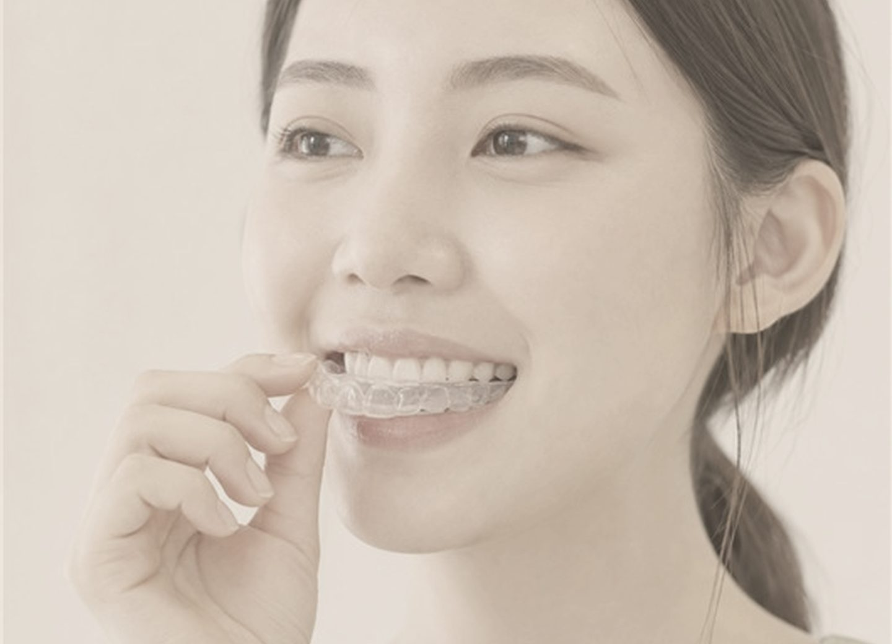

체형 분석
라인과 피부 상태를 확인합니다.
BODY BALANCE

CONTOUR SHOT
체형과 지방 분포를 살핀 뒤 필요한 부위와 용량을 계획합니다.
진단과 디자인에 충분한 시간을 두고 한 분씩 진행합니다.
GYEOL:ON SIGNATURE PROTOCOL
라인과 피부 상태를 확인합니다.
에너지와 강도를 배분합니다.
계획한 부위를 충분히 다룹니다.
회복과 생활 관리를 안내합니다.
MECHANISM

정면과 측면의 실루엣을 함께 확인합니다.
과한 범위를 줄이고 필요한 지점에 집중합니다.
일정과 생활 패턴을 반영해 강도를 결정합니다.
TREATMENT AREAS
THREE BENEFITS

작은 부위도 과하지 않게
부위별 특성을 고려

복합 설계로 균형을 보완
EXPECTED RESULTS

복부와 옆구리의 연결
팔과 겨드랑이 주변

하체의 표면과 탄력
전체적인 비율과 균형
FOR WHOM
FAQ
개인차가 있으며 상담에서 예상되는 느낌과 회복 과정을 자세히 안내합니다.
대부분 바로 일상생활이 가능하지만 부위와 강도에 따라 달라질 수 있습니다.
목표와 지방 분포에 따라 권장 횟수가 달라집니다.
상태를 확인한 뒤 순서와 간격을 계획합니다.
복용 중인 약과 과거 병력을 상담 시 알려 주세요.